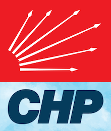

"Benim iki büyük eserim var; biri Türkiye Cumhuriyet'i diğeri Cumhuriyet Halk Partisi."

CHP
CHP
Genel Başkan
Genel Başkan
Özgeçmişi
Mal Bildirimi
TBMM Grup Konuşmaları
Yazılı Açıklamalar
Kabuller
Miting Konuşmaları
Etkinlik Konuşmaları
TV Programları
Sosyal Medya
Basın Açıklamaları
Haberler
Cumhuriyet Yazıları
Adalet Yürüyüşü
Röportajlar
Parti
Parti
Parti Yönetimi
Yerel Yönetimler
Kadın Kolları
Gençlik Kolları
CHP Avrupa Birliği Temsilciliği
CHP Amerika Temsilciliği
Yurtdışı Birlikleri
Parti Programı
Parti Tüzüğü
CHP Yönetmelikleri
CHP Tarihi
Kurumsal Kimlik
CHP Gönüllüleri
Online Üyelik
Aidat
CHP TV
2018 Seçim Bildirgesi
GÜNDEM
YAYINLAR
MİLLET DERGİSİ
İLETİŞİM
menu
CHP
CHP
Genel Başkan
Genel Başkan
Özgeçmişi
Mal Bildirimi
TBMM Grup Konuşmaları
Yazılı Açıklamalar
Kabuller
Miting Konuşmaları
Etkinlik Konuşmaları
TV Programları
Sosyal Medya
Basın Açıklamaları
Haberler
Cumhuriyet Yazıları
Adalet Yürüyüşü
Röportajlar
Parti
Parti
Parti Yönetimi
Yerel Yönetimler
Kadın Kolları
Gençlik Kolları
CHP Avrupa Birliği Temsilciliği
CHP Amerika Temsilciliği
Yurtdışı Birlikleri
Parti Programı
Parti Tüzüğü
CHP Yönetmelikleri
CHP Tarihi
Kurumsal Kimlik
CHP Gönüllüleri
Online Üyelik
Aidat
CHP TV
2018 Seçim Bildirgesi
GÜNDEM
YAYINLAR
MİLLET DERGİSİ
İLETİŞİM
Giriş Yap
CHP Üyesi Ol
Giriş Yap
CHP Üyesi Ol
Yayınlar
Bilim Platformu Yayınları
Kültür ve Sanat Raporları
Parti Meclisi Raporları
MYK Raporları
Haftalık Bilgilendirme Raporu
İşveren Sendikaları ve Meslek Birlikleri Raporları
İnsan Hakları İhlalleri Raporları
İşsizlik ve Yoksulluk Bültenleri
Yerel Yönetimler Yayınları
Tarım Politikası Yayınları
Dijital Yayınlar
Diğer Yayınlar
Seçim Bildirgeleri
Kongre Belgeleri
Millet Dergisi
Gençlik Politikaları Yayınları
Bilim Platformu Yayınları
Kültür ve Sanat Raporları
Parti Meclisi Raporları
MYK Raporları
Haftalık Bilgilendirme Raporu
İşveren Sendikaları ve Meslek Birlikleri Raporları
İnsan Hakları İhlalleri Raporları
İşsizlik ve Yoksulluk Bültenleri
Yerel Yönetimler Yayınları
Tarım Politikası Yayınları
Dijital Yayınlar
Diğer Yayınlar
Seçim Bildirgeleri
Kongre Belgeleri
Millet Dergisi
Gençlik Politikaları Yayınları
"GENÇLİK; ÖZGÜR, YARATICI VE ADİL BİR GELECEK İSTİYOR"
"DERİNLEŞEN BUHRAN AİLELERİ DAĞITIYOR"
KOVİD-19 GÖLGESİNDE DERİNLEŞEN BUHRAN: TEHLİKEYE ATILAN HAYATLAR, YOKSULLUĞA TERK EDİLEN VATANDAŞLAR
SARAY’IN “YERLİ VE MİLLİ” MASALI: TANK VE PALET FABRİKASI VATANDIR; ÖZELLEŞTİRİLMESİ KABUL EDİLEMEZ
TÜRKİYE HIZLA YAŞLANIYOR: YAŞLILARIMIZIN YOKSULLUK VE YALNIZLIĞINA ÇARE OLUNMUYOR
ÇOCUKLARIMIZ AKP REJİMİNDE YOKSUL VE MAĞDUR - İNFOGRAFİK
ROMANLAR İÇİN YOKSULLUK VE AYRIMCILIK KADER OLMASIN - İNFOGRAFİK
SARAYIN EKONOMİSİ TOPLUMU BUNALIMA VE İNTİHARA SÜRÜKLÜYOR - İNFOGRAFİK
ÇOCUKLARIMIZ AKP REJİMİNDE YOKSUL VE MAĞDUR
ROMANLAR İÇİN YOKSULLUK VE AYRIMCILIK KADER OLMASIN: EN CANLI RENKLERİMİZ SOLMASIN!
SARAYIN EKONOMISI TOPLUMU BUNALIMA VE INTIHARA SÜRÜKLÜYOR
SARAY REJİMİ TÜRKİYE’Yİ GERİLETİYOR: ENDEKSLERDE DİBE SAVRULAN TÜRKİYE
ÖĞRETMENLERİMİZ AKP SİSTEMSİZLİĞİNİN MAĞDURU: KALPLER KIRIK, UMUTLAR YİTİK - İNFOGRAFİK
SARAY EKONOMİSİ SAĞLIĞA ZARARLIDIR: İLAÇ VE TIBBİ CİHAZ SEKTÖRÜNDE KRİZ - İNFOGRAFİK
OTORİTERLEŞEN TÜRKİYE’NİN ÇÖLLEŞEN MEDYASI - İNFOGRAFİK
ÜNİVERSİTELERDE YAPRAK DÖKÜMÜ VE AKADEMİK YIKIM - İNFOGRAFİK
AKP TÜRKİYE’SİNDE GENÇLER MADDE BAĞIMLILIĞININ PENÇESİNDE - İNFOGRAFİK
AKP’NİN YOL AÇTIĞI BÜYÜK BEYİN GÖÇÜ - İNFOGRAFİK
AKP SAĞLIKTA ŞİDDETE GÖZ YUMARAK HALK SAĞLIĞINI TEHLİKEYE ATIYOR
ÖĞRETMENLERİMİZ AKP SİSTEMSİZLİĞİNİN MAĞDURU: KALPLER KIRIK, UMUTLAR YİTİK
AKP TÜRKİYE’SİNDE GENÇLER MADDE BAĞIMLILIĞIN PENÇESİNDE
AKP'NİN YOL AÇTIĞI BÜYÜK BEYİN GÖÇÜ
OTORİTERLEŞEN TÜRKİYE’NİN ÇÖLLEŞEN MEDYASI
ENSAR VE MUHACİR SÖYLEMİ SURİYELİ SIĞINMACIYA DERMAN OLMUYOR
SARAYIN YANLIŞ GÖÇMEN POLİTİKASININ FATURASINI VATANDAŞ ÖDÜYOR
"ÜNİVERSİTELERDE YAPRAK DÖKÜMÜ VE AKADEMİK YIKIM” BAŞLIKLI POLİTİKA NOTU
TANK VE PALET FABRİKASININ ÖZELLEŞTİRİLMESİ İLE İLGİLİ POLİTİKA NOTU
İNSANCA BİR YAŞAM İÇİN HAKÇA BİR ASGARİ ÜCRET BAŞLIKLI POLİTİKA NOTU
CHP BİLİM PLATFORMU, “SARAY EKONOMİSİ SAĞLIĞA ZARARLIDIR: İLAÇ VE TIBBİ CİHAZ SEKTÖRÜNDE KRİZ" BAŞLIKLI POLİTİKA NOTU
16 Nisan 2017 Halkoylamasına İlişkin BİLİMSEL GÖRÜŞ
4+4+4'ün 1 Yılı
AKP Eğitimin 6’nı Üstüne Getirdi: AKP’nin Yeni Oyuncağı 5 Yaşındaki Çocuklar
AKP Ne Emeğin Yanında Ne Emeklinin, CHP ile İnsan Onuruna Yakışır Emeklilik
AKP İKTİDARI VE REJİMİN OTORİTERLEŞMESİ
AKP İktidarında Gençler: “Yurtsuz, Sessiz, Renksiz"
AKP ‘Terörü’ Alt Edebilir mi?
AKP’nin Dört Dörtlük Eğitim Tuzağı
AKP’nin Kültür Karartması: Sanata Sansür, Sanatçıya Baskı
AKP’nin Orta Doğu Politikası: Ne Yurtta Ne Dünyada Barış
AKP’nin Yasakçı Ağında İnternet
AKP’nin Yol Açtığı Büyük Toplumsal Çöküntü
Ahlak Zabıtalığından Toplum Mühendisliğine: Kadınların Özel Yaşamına Göz Diken AKP
Aile Sigortası: Her Aile Rahat Bir Nefes Alacak-2011
Aydınlanma Nedir ve Nasıl İşlevselleştirilebilir?
Aydınlanma ve Cumhuriyet
Bilgi ve İletişim Teknolojileri Raporu-2011
Bir Gün Değil Hergün Hatırlanan, Yaşam Boyu Öğrenen Öğretmen
Birinci Yılında Gezi Hareketi - 1
Birinci Yılında Gezi Hareketi - 2
Demokrasi Raporu-2011
Dili Yanlış Kullanarak Tarih Nasıl Şekillendiriliyor?
Doğu ve Güneydoğu Anadolu Raporu-2011
DÜNDEN BUGÜNE CUMHURİYET HALK PARTİSİ
Dünya Basınında ADALET YÜRÜYÜŞÜ - 1
Dünya Basınında ADALET YÜRÜYÜŞÜ - 3
Egemenlik Hiçbir Biçimde Ortaklık Kabul Etmez!
Engellilerin Sorunlarını Onlarla Birlikte Çözüyoruz
Eğitim Raporu-2011
Eğitim Sistemi Tartışmaları, CHP Ne Öngörüyor: 1 + 8 + 4
Gençlik Raporu-2011
Gezi Hareketi
Gezi Raporu (İngilizce)
Göstermelik Paketler ile Kadın Sorunları Çözülemez
Günışığında Yönetim-2011
Hiçbir Çocuk Arkada Bırakılmamalı: Parasız İlköğretim ve Bir Öğün Sıcak Yemek
Kadın Raporu-2011
Kamuda Aydınlanma Etik ve Saydamlık-2011
Katılım Payları: AKP’nin Acı Reçetesi
Korku ve Güvensizlik Toplumu: AKP’nin Gözetim ve Fişleme Stratejileri
Moses Mendelssohn “Aydınlanmak Ne Demektir?”
Ne Azarlanan Ne Tasarlanan: Özgür ve Yenilikçi Gençlik
Nefrete Karşı Bir Arada Yaşamı Savunmak: Eşit Yurttaş, Özgür İnsan, Kardeşçe Yaşam
Niçin Türkiye Üniversite Tarihi, Eleştirel Aklı ve Bilimselliği Ezme Tarihidir?
ORMANCILIK POLİTİKALARI VE ORMAN KÖYLÜLERİNİN DURUMU
Sivil Toplum Raporu-2011
Sınır Tanımayan Otoriterlik, Çözüm Tam Demokrasi ve Hukukun Üstünlüğü
Tolerans, Laiklik ve Özgürlük Birbirini Gerektirir
Türkiye Bilimler Akademisi AKP Kıskacında: Türkiye’de Kurumsal ve Bilimsel Özerkliğin Tahribatı
Türkiye’deki Suriyeli Göçmenlerin Toplumsal Kabul ve Uyumlarına İlişkin Rapor/Haziran 2016
Vatandaş Vergisini Veriyor, Hükümet de Hesabını Verecek
Yolsuzluğun Kitabı 1 Kamu Alımları
Yolsuzluğun Kitabı 2 TOKİ
Yurt Dışı Seçim Çevresi
Çalışma Hayatından Kopartılan, Toplumda Güçsüzleştirilen Kadın
Çocuk Raporu-2011
Çocukların Özgür Seçimi mi, AKP’nin Siyasi Dayatması mı?
İklim Raporu-2011
İnsan ve Üretim Odaklı Yeni Ekonomi-2011
İşçi Ölümlerinin “Kazası” Olmaz
Dünya Basınında ADALET YÜRÜYÜŞÜ - 2